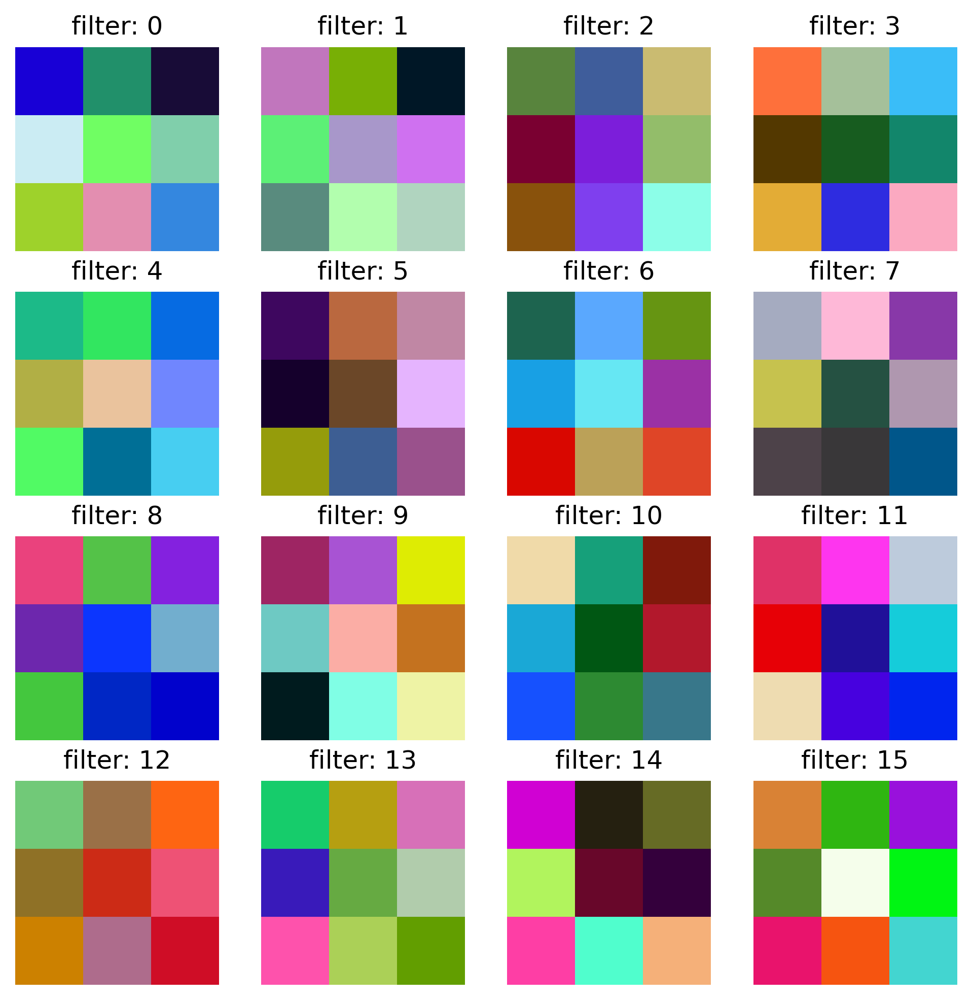

We will need some data again. Nothing to train here, but we’ll use CIFAR-10 training data just for illustration.
DataLoader Defintion
from torchvision import datasets, transformsfrom torch.utils.data import DataLoader, Subsetimport torchtransform = transforms.ToTensor()# if exists - will not be downloaded againtrain_dataset = datasets.CIFAR10( root='./data', train=True, download=True, transform=transform)# pick a random subset and build a data loader (1 batch)torch.manual_seed(SEED)indices = torch.randperm(len(train_dataset))[:N_SAMPLES]subset = Subset(train_dataset, indices)train_loader = DataLoader(subset, batch_size=N_SAMPLES, shuffle=False)print(f'train_loader: use {len(subset)} samples from train_dataset {train_dataset.data.shape}')
train_loader: use 500 samples from train_dataset (50000, 32, 32, 3)
Load Checkpoint
Here we loads all relevant information from previous training:
# Get the trained weights of the 1st conv layer # shape: [out_channels, in_channels, H, W]W = model.conv1.weight.data.cpu().numpy() print('W.shape: ',W.shape) # [32, 3, 3, 3]fig = plt.figure(figsize=(8, 8))nr, nc = (4, 4) # number of rows and columnsfor i inrange(nr * nc):# Each filter: shape [3, 3, 3] (in_channels, H, W) img = W[i].transpose(1, 2, 0) # transpose to (H,W,C)# Normalize to [0, 1] for visualization img = (img - img.min()) / (img.max() - img.min() +1e-5) ax = fig.add_subplot(nr, nc, i +1) ax.imshow(img) ax.set_title(f'filter: {i}') ax.axis('off')plt.show()
W.shape: (32, 3, 3, 3)

Note
shown is only a subset of all filters in the first conv layer
each 3x3 filter has 3 channels (to match the RGB channels from input) \(\to\) color representation
black/white: max/min activation for all filter channels
in general: filter channels match channels of input activation (different for different layers)
filter = neuron calculate \(z=W \ast x + b\) for each 3x3 image patch (+ padding)
filter parameters are not very helpful to understand predictive power
Feature Maps & Hooks
Goal of convolutional layers: obtain better data representation of the image data by representing spatial features (edges etc.).
With PyTorch we can use hooks to access the output from selected layers.
Code
def get_feature_map(model, dataloader, layer_name, device):""" obtain representation of input data at the model layer defined by `layer_name` Use a `hook` to return the layer activations from forward calculation """ model.eval() X_repr = []# define hook function that collects output from # the layer (=module) at which it was registered# output will be appended to X_reprdef hook(module, inp, out): X_repr.append(out.detach().cpu())# define layer of interest (by layer_name) layer =dict(model.named_modules())[layer_name]# register hook function at specified layer handle = layer.register_forward_hook(hook)# get data (xb, yb) from dataloader xb, yb =next(iter(dataloader)) xb = xb.to(device)with torch.no_grad(): _ = model(xb) handle.remove() # remove hookreturn xb.cpu().numpy(), X_repr[0].numpy(), yb.numpy()# example useX_orig, X_layer, y = get_feature_map( model, dataloader=train_loader, layer_name="conv1", device=device,)print(f'X_orig.shape {X_orig.shape} X_layer.shape {X_layer.shape}')
---title: CNN inspectionjupyter: pytorchdraft: falseeval: truecategories: - loading - checkpoints - filter - activations - layer - hooksdescription: loading and looking---This section describes how to - load pre-trained models for inspection (or for continued training)- access model parameters (filters) and data representations (activations)```{python}#| label: imports#| code-fold: true#| code-summary: Importsimport osimport numpy as npimport torchimport torch.nn as nnimport torch.nn.functional as Ffrom torchvision import datasets, transformsfrom torch.utils.data import DataLoader, Subsetfrom torchinfo import summaryfrom sklearn.metrics import confusion_matrix, ConfusionMatrixDisplay, classification_reportfrom sklearn.model_selection import train_test_splitimport matplotlib.pyplot as pltfrom PIL import Imagefrom lecture_utils.helper import detect_devicedevice = detect_device()BATCH_SIZE =64N_SAMPLES=500SEED =43print('torch-version: ', torch.__version__)print('device: ', device)```## Define Data Loader We will need some data again. Nothing to train here, but we'll use CIFAR-10 training data just for illustration.```{python}#| label: cifar_data#| code-fold: true#| code-summary: DataLoader Defintionfrom torchvision import datasets, transformsfrom torch.utils.data import DataLoader, Subsetimport torchtransform = transforms.ToTensor()# if exists - will not be downloaded againtrain_dataset = datasets.CIFAR10( root='./data', train=True, download=True, transform=transform)# pick a random subset and build a data loader (1 batch)torch.manual_seed(SEED)indices = torch.randperm(len(train_dataset))[:N_SAMPLES]subset = Subset(train_dataset, indices)train_loader = DataLoader(subset, batch_size=N_SAMPLES, shuffle=False)print(f'train_loader: use {len(subset)} samples from train_dataset {train_dataset.data.shape}')```## Load CheckpointHere we loads all relevant information from previous training: - model_state (parameters)- history- class names- ... This can be customized.```{python}#| label: load_checkpointdoc_dir = os.getcwd()check_path = os.path.join(doc_dir, "output", "cifar_checkpoint.pt")checkpoint = torch.load(check_path, map_location="cpu")print('checkpoint keys: ', list(checkpoint.keys()))```## Model - Loss - Optimizer::: {.callout-tip}It's useful to have a central place for consistent model definitions:`from models.cnn import CNN_Model`:::```{python}#| label: load_model_unsafe#| eval: false#| echo: false# the following is considered insecure - only for trusted sources# https://docs.pytorch.org/docs/stable/generated/torch.load.htmlfrom models.cnn import CNN_Modeldoc_dir = os.getcwd()model_path = os.path.join(doc_dir, "output", "cifar_full_model.pt")model = torch.load(model_path, weights_only=False, map_location=device)``````{python}#| label: model_loss_optim#| code-fold: false#| code-summary: Model-Loss-Optimizer# import class definition (model structure)from models.cnn import CNN_Model# instantiate model _before_ filling parametersnc =10model = CNN_Model(num_classes=nc).to(device)print(summary(model, device=device))# some layers/modules have names for convenient accessfor name, module in model.named_modules():print(name, ":", module)# load pre-trained parameters from checkpointmodel.load_state_dict(checkpoint["model_state"])# define and update optimizer stateoptimizer = torch.optim.Adam(model.parameters())optimizer.load_state_dict(checkpoint["optimizer_state"])# define loss functionloss_function = nn.CrossEntropyLoss()```## CNN Pathology### Filters (Kernels)```{python}#| label: filters#| classes: preview-image#| code-fold: true# Get the trained weights of the 1st conv layer # shape: [out_channels, in_channels, H, W]W = model.conv1.weight.data.cpu().numpy() print('W.shape: ',W.shape) # [32, 3, 3, 3]fig = plt.figure(figsize=(8, 8))nr, nc = (4, 4) # number of rows and columnsfor i inrange(nr * nc):# Each filter: shape [3, 3, 3] (in_channels, H, W) img = W[i].transpose(1, 2, 0) # transpose to (H,W,C)# Normalize to [0, 1] for visualization img = (img - img.min()) / (img.max() - img.min() +1e-5) ax = fig.add_subplot(nr, nc, i +1) ax.imshow(img) ax.set_title(f'filter: {i}') ax.axis('off')plt.show()```::: {.callout-note}- shown is only a subset of all filters in the first conv layer- each 3x3 filter has 3 channels (to match the RGB channels from input) $\to$ color representation- black/white: max/min activation for all filter channels- in general: filter channels match channels of input activation (different for different layers)- filter = neuron calculate $z=W \ast x + b$ for each 3x3 image patch (+ padding)- filter parameters are not very helpful to understand predictive power:::### Feature Maps & HooksGoal of convolutional layers: obtain better data representation of the image data by representing spatial features (edges etc.). With PyTorch we can use hooks to access the output from selected layers.```{python}#| label: get_layerdef get_feature_map(model, dataloader, layer_name, device):""" obtain representation of input data at the model layer defined by `layer_name` Use a `hook` to return the layer activations from forward calculation """ model.eval() X_repr = []# define hook function that collects output from # the layer (=module) at which it was registered# output will be appended to X_reprdef hook(module, inp, out): X_repr.append(out.detach().cpu())# define layer of interest (by layer_name) layer =dict(model.named_modules())[layer_name]# register hook function at specified layer handle = layer.register_forward_hook(hook)# get data (xb, yb) from dataloader xb, yb =next(iter(dataloader)) xb = xb.to(device)with torch.no_grad(): _ = model(xb) handle.remove() # remove hookreturn xb.cpu().numpy(), X_repr[0].numpy(), yb.numpy()# example useX_orig, X_layer, y = get_feature_map( model, dataloader=train_loader, layer_name="conv1", device=device,)print(f'X_orig.shape {X_orig.shape} X_layer.shape {X_layer.shape}')``````{python}#| label: plot_feature_map#| code-fold: true#| code-summary: plottingselected_channels = np.arange(12)plt.figure(figsize=(7, 7))# originalsplt.subplot(4, 4, 1)plt.imshow(X_orig[i].transpose(1,2,0))plt.title(f"Original")plt.axis("off")for j inrange(3): plt.subplot(4, 4, 2+j) img = X_orig[i, j] plt.imshow(img, cmap="gray") plt.title(f"Orig, channel {j}") plt.axis("off")# feature mapfor k, ch inenumerate(selected_channels): plt.subplot(4, 4, 5+k) feature = X_layer[i, ch] plt.imshow(feature, cmap="gray") plt.title(f"Feature Map {ch}") plt.axis("off")plt.tight_layout()plt.show()``````{python}#| label: last_layer_PCA#| code-fold: true#| echo: false#| eval: falsefrom sklearn.decomposition import PCAfrom sklearn.manifold import TSNEX_orig, X_layer, y = get_feature_map( model, dataloader=train_loader, layer_name="fc1", device=device,)X_orig_flat = X_orig.reshape(X_orig.shape[0], -1)X_layer_flat = X_layer.reshape(X_layer.shape[0], -1)print(f'X_orig_flat.shape: {X_orig_flat.shape} X_layer_flat.shape: {X_layer_flat.shape}')#dimred = TSNE(n_components=2, random_state=42, max_iter=5000)dimred = PCA(n_components=2, random_state=42)X_pca = dimred.fit_transform(X_orig_flat)X_lay_pca = dimred.fit_transform(X_layer_flat)print('PCA Shapes: ', X_pca.shape, X_lay_pca.shape)fig, axs = plt.subplots(1, 2, figsize=(8, 4), constrained_layout=True)cm = plt.get_cmap('tab10')# original PCAaxs[0].scatter(X_pca[:, 0], X_pca[:, 1], c=y, cmap=cm)axs[0].set_title('PCA: X @ input')# transformed PCAsc = axs[1].scatter(X_lay_pca[:, 0], X_lay_pca[:, 1], c=y, cmap=cm)axs[1].set_title('PCA: X @ FC1')fig.colorbar(sc, ax=axs, location='right')plt.show()```::: {.callout-important}## Summary- goal: 'better' representation of input data- MLP: pass 1D vectors from layer to layer- CNN: match network to spatial structure (pass 2D images)- parameter sharing: filter weights are independent of spatial location- Lower layers: Primitive "concepts" (edges) - Deeper layers: Higher order "concepts" (objects):::## Animation & Outlook::: {.callout}### CIFAR-10 Demo[CNN with Javascript. Animation from A. Karpathy.](https://cs.stanford.edu/people/karpathy/convnetjs/demo/cifar10.html){target="_blank" rel="noopener"}:::```{python}#| label: references#| eval: false#| echo: false# Zeiler & Fergus (2012): Visualizing & Understanding CNN https://arxiv.org/pdf/1311.2901# CNN Explainer: https://poloclub.github.io/cnn-explainer/#article-convolution# https://learnopencv.com/understanding-convolutional-neural-networks-cnn/```